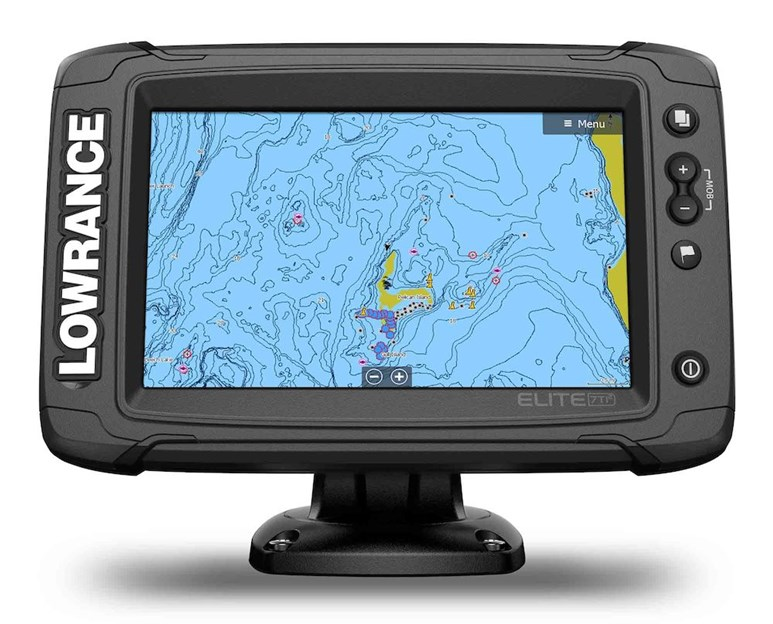
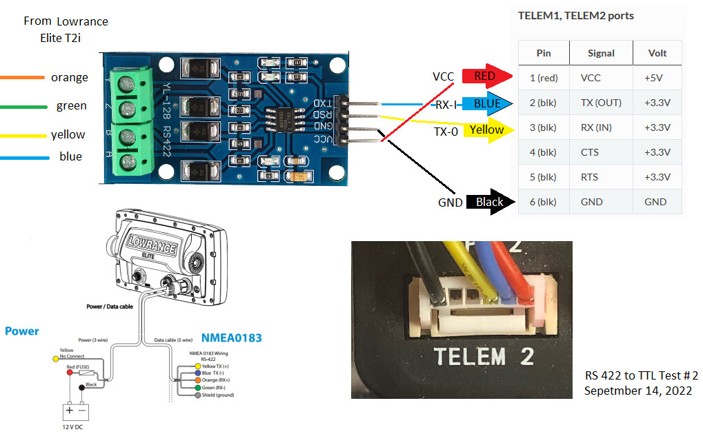

Lowrance Elite Ti2 Sonar¶
The Lowrance Elite Ti2 sonar can be connected to the autopilot so that the sonar can use the autopilot’s position estimate (which is normally better than the sonar’s built-in GPS) and the autopilot can record and report the sonar’s simple depth.
{kind=link}
Discussion of this sonar’s setup is here
Hardware Setup¶
{kind=link}
Purchase an RS422 to TTL converter
Connect the sonar’s NMEA 0183 pins to the left side of the converter as shown above
Connect one of the autopilot’s serial ports to the right side of the converter as shown above
配置¶
If the autopilot’s Serial2 port (aka Telem2) is used then the following parameters should be set:
SERIAL2_PROTOCOL = 9 (Lidar)
SERIAL2_BAUD = 38 (38400 baud) to match the baud rate the Elite is using
These rangefinder parameters should also be set:
RNGFND1_TYPE = 17 (NMEA)
RNGFND1_MIN_CM = 13
RNGFND1_MAX_CM = 30000 (300m)
RNGFND1_ORIENT = 25 (down)
Testing the sensor¶
Distances read by the sensor can be seen in the Mission Planner’s Flight Data screen’s Status tab. Look closely for “sonarrange”.